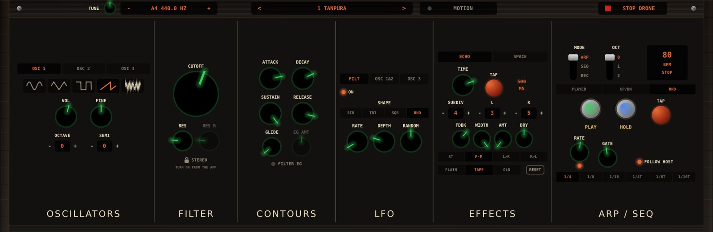

DroneSynth for Windows
A free VST3 and CLAP plugin and a standalone app for 64-bit Windows.
A free preview of DroneSynth for 64-bit Windows: a VST3 and CLAP plugin and a standalone app, with the same hardware panel as the iPad and Mac plugin, all 105 of the phone apps' sounds, and an ARP/SEQ that follows your DAW's tempo.

Download for Windows (.zip) Version 0.5.0 · 3.6 MB · Windows 10 or 11, 64-bit
Setting it up
1. Install
- Download the zip above and unzip it (right-click › Extract All…).
- Copy the DroneSynth.vst3 folder to
C:\Program Files\Common Files\VST3\ - For a CLAP host (REAPER, Bitwig, FL Studio), also copy DroneSynth.clap to
C:\Program Files\Common Files\CLAP\(create the folder if it isn't there). - Windows asks for permission to copy into Program Files: click Continue.
2. Add it to your DAW
- Rescan your plugins. For example: Ableton Live › Options › Preferences › Plug-Ins › Rescan; FL Studio › Options › Manage plugins › Find more plugins; REAPER › Options › Preferences › Plug-ins › VST › Re-scan.
- Find Drone Synth by Sufy Studios among your instruments and add it to a MIDI or instrument track.
- Arm or select the track and play your MIDI keyboard. The window opens with the full panel.
Or play it on its own
Double-click DroneSynth.exe to play without a DAW. It plays through your computer's speakers or headphones, has a keyboard under the panel (click the keys, or use ‹ and › to change octave), and listens to any MIDI keyboard you plug in. It isn't code-signed yet, so the first time Windows may say it protected your PC: click More info › Run anyway.
Using the panel
- Presets: click ‹ and › in the top bar (or click or scroll over the name) to step through 105 sounds in eight categories — Drones, Pads, Bass, Leads, Bells, Rhythm, Drums and Textures; the category shows beside the name. Each sets every knob, so it's a good way to learn what the synth can do; your DAW saves the one you chose, and any changes, with the project.
- Knobs: drag up or down. Hold Shift for fine adjustment, scroll over a knob to nudge it, and double-click to reset it.
- OSC 1 / 2 / 3, the three LFOs and ECHO / SPACE share their columns: click the small tabs to switch.
- ARP / SEQ: set MODE to ARP, press PLAY and hold some keys. With FOLLOW HOST lit, it locks to your DAW's tempo while the transport plays. In SEQ mode, REC records a pattern as you play; patterns are saved with your project.
- TUNE sets the whole synth's pitch: drag the small knob, or use − and + to move a cent at a time.
- STOP DRONE silences anything left sounding.
3. Play it from your phone (optional)
With MOTION in the DroneSynth app on Android, iPhone or iPad, every knob you turn and key you play on the phone plays the plugin on your PC over Wi-Fi, and your DAW can record it as automation.
- Install the free rtpMIDI driver on your PC and open it.
- Under My Sessions, click + to add a session, and tick Enabled. Set Who may connect to me to Anyone. If Windows Firewall asks, allow rtpMIDI on private networks.
- In your DAW's MIDI settings, turn on the rtpMIDI session as an input (it's listed under its session name, such as "Session 1"), then choose it as the MIDI input of the Drone Synth track.
- On your phone, on the same Wi-Fi: open DroneSynth › MOTION › Controller, tap Controller to start sending, then tap your PC under NEARBY. It shows CONNECTED, and reconnects by itself next time.
- Tap Resend on the phone to send your phone's whole sound to the plugin. The plugin's MOTION light flickers while the phone plays.
Stereo Filters are a purchase in the phone app. Once you own them, switch STEREO on in the app while it's connected and the plugin turns them on too; your project remembers it.
Troubleshooting
The plugin doesn't appear in my DAW
Check the files are in the folders above (the VST3 is a folder called DroneSynth.vst3), then rescan. Some DAWs only list new plugins after a restart. It's 64-bit only, so it won't load in a 32-bit DAW.
The standalone app makes no sound
It plays through Windows' default output: check the speaker icon in the taskbar and choose your speakers or headphones there, then start the app again. Version 0.3 and earlier needed JACK to play; download 0.3.1.
My PC isn't listed on the phone
Both must be on the same Wi-Fi (not a guest network). In rtpMIDI, the session must be ticked Enabled with "Who may connect to me" set to Anyone, and Windows Firewall must allow rtpMIDI. Restarting rtpMIDI often helps.
A note keeps sounding
Click STOP DRONE at the top of the panel. On the phone, turning Drone off or stopping the Controller also silences the plugin.